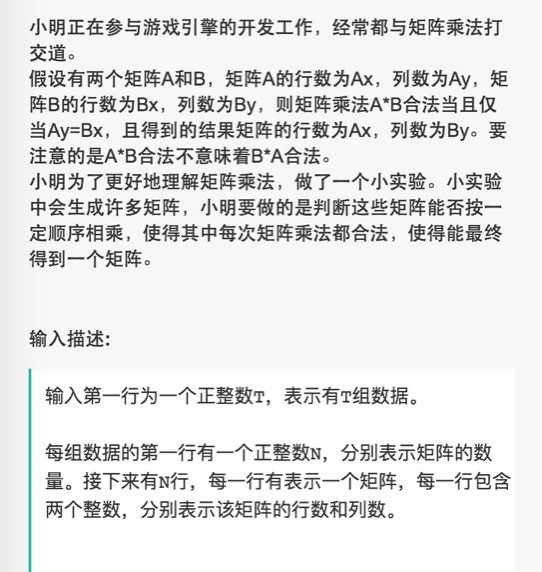
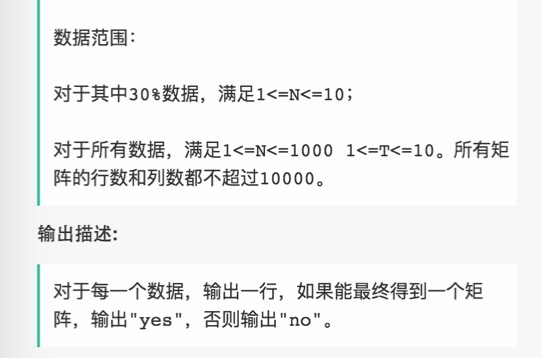
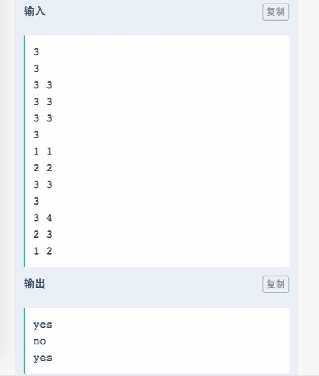
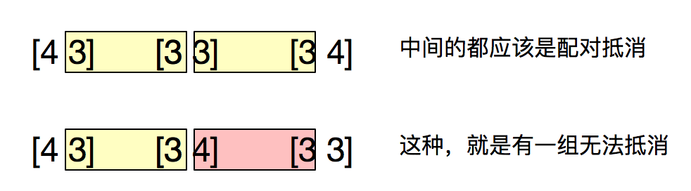

☰ 目录
015 判断很多小矩阵能否相乘
链接和考点
| 栏目 |
详细 |
| 网易互娱编程测试 |
2018.09.08 |
| 考点 |
vector2D, dfs |
| 难度 |
Easy |
题意



分析
1- 这个题我说一下我朋友的思路（陈星辰），
用两个multimap, 分别按照 row-col 和 col-row （最后一个没有存它的转置矩阵）来存， 然后，以multimap 是否为空进行while 循环， 从 row-col 中取出最后一个矩阵， 在col-row multimap 中找，看能否有与之相乘的矩阵， 找到第一个就擦除它， 并在row-col 将最后一个矩阵擦除， 直到最后，如果全能找到配对的， 那么row-col 就为空，否则， 无法相乘。
提出两个问题：
- 1） 在两个multimap 中， 他在row-col 中存了矩阵A， 那么在col-row 中同时也存了矩阵 $A^T$, 除了最后一个，这里好像缺少数学证明他的可行性； 因为在找能与之相乘的矩阵时，$AA^T$ 自己乘自己总是可行的。
- 2）在 “找到第一个就擦除它”， 这个好像忽略了顺序的差别， 如下
[4 3] [3 4] [3 3 ], 这样就不能相乘。
4X3
3X3
3X4
2- 首先， 将每个矩阵的信息按照 row-col 存到一个multimap 里面，
我发现了一个规律， 即，能够影响结果的是第一个和最后一个矩阵， 而中间的矩阵，都应该按照一定条件抵消。

所以我们应该选 $A^2_2$ 选两组， 他们是有序的，即 一种是一个在前（另一个在后），一种是另一个在前（它在后）， 因为这样省略掉两个不配对的数（你可以认为，首尾两端的数和任意数配对）
测试
A了x
参考答案
同学写了一个排序算法，没什么道理：
//哈希函数 H(k)=3*k MOD length
#pragma warning(disable:4996) // 关闭vs的一些警告
#include<stdio.h>
#include<string.h>
#include<iostream>
#include<functional>
#include<queue>
#include<set>
#include<string>
#include<unordered_map>
#include<map>
#include<array>
#include<algorithm>
#include<stack>
using namespace std;
typedef struct node{
int x, y;
}node;
int cmp(node a,node b)
{
if (a.x == b.x) return a.y < b.y;
return a.x < b.x;
}
vector<string>ans;
node dt[10000];
int main()
{
int t, n;
cin >> t;
while (t--)
{
cin >> n;
for (int i = 0; i < n; ++i)
{
cin >> dt[i].x >> dt[i].y;
}
sort(dt, dt + n, cmp);
int beginIndex = dt[0].y;
bool yes = true;
for (int i = 1; i < n; ++i)
{
if (dt[i].x == dt[i - 1].x && dt[i].y == dt[i - 1].y && dt[i].x == dt[i].y)
{
continue;
}
else
{
if (beginIndex == dt[i].x)
{
beginIndex = dt[i].y;
}
else
{
yes = false;
break;
}
}
}
if (yes) ans.push_back("yes");
else ans.push_back("no");
}
for(int i = 0; i < ans.size(); ++i)
{
cout << ans[i] << endl;
}
}
我的解答，还没弄完， 需要debug， 有点问题还：
//哈希函数 H(k)=3*k MOD length
#pragma warning(disable:4996) // 关闭vs的一些警告
#include<stdio.h>
#include<string.h>
#include<iostream>
#include<functional>
#include<queue>
#include<set>
#include<string>
#include<unordered_map>
#include<map>
#include<array>
#include<algorithm>
#include<stack>
using namespace std;
using namespace std;
void process( multimap<int, int>& row_col, unordered_map<int, int>& row_sta, unordered_map<int, int>& col_sta){ // 开始统计行和列上数字的频次
for( auto it = row_col.begin(); it != row_col.end(); it++ ){
if( row_sta.find(it->first) == row_sta.end() ){ // first dis
row_sta[it->first] = 1;
}else
row_sta[it->first]++;
if( col_sta.find(it->second) == col_sta.end() ){ // first dis
col_sta[it->second] = 1;
}else
col_sta[it->second]++;
}
}
int main() {
int T;
cin >> T;
while (T--){
int M;
cin >> M;
multimap<int, int> row_col;
multimap<int, int> col_row;
for( int i=0; i < M; i++ ){
int row, col;
cin >> row >> col;
row_col.insert(make_pair(row, col));
col_row.insert(make_pair(row, col));
}
unordered_map<int, int> row_sta, col_sta;
process( row_col, row_sta, col_sta);
if( M == 1)
cout << "yes" << endl;
else if( M > 2 ){
bool isDiffOne = true; // 最多个数相差一个
for( auto it = row_col.begin(); it !=row_col.end(); it++ ){
if( col_sta.find(it->first) != col_sta.end() ){
if(it -> second == col_sta[it->first]){
it -> second = 0;
col_sta[it->first] = 0; // 相互抵消
} else if( abs(it -> second - col_sta[it->first]) == 1 ){
if( it -> second > col_sta[it->first] ){
it -> second = 1;
col_sta[it->first] = 0;
}else{
it -> second = 0;
col_sta[it->first] = 1;
}
}
else if( abs(it -> second - col_sta[it->first]) > 1 ){
isDiffOne = false;
break;
}
}else{ // 不能找到
if( it -> second > 1 ){ // 1 特有的比个数1还大， 肯定不对
isDiffOne = false;
break;
}
}
}
if( ! isDiffOne ){ // 相差个数大于1的， 肯定不是
cout << "no" << endl;
}else{
// 统计第一个map， 最多只有1个1存在，否则错误
bool flag_fir = true;
int cnt_fir = 0;
for( auto it = row_col.begin(); it !=row_col.end(); it++ ){
if( it -> second != 0 ){
if( cnt_fir == 0 )
cnt_fir++;
else // 第二次碰到 相差个数不为1的
flag_fir = false;
}
}
bool flag_sec = true;
int cnt_sec = 0;
for( auto it = col_row.begin(); it !=col_row.end(); it++ ){
if( it -> second != 0 ){
if( it -> second > 1 ){
flag_sec = false; // 不同的那个键有多个值， 肯定是不对的， 直接终止循环
break;
}
if( cnt_sec == 0 )
cnt_sec++;
else // 第二次碰到 相差个数不为1的
flag_sec = false;
}
}
if( flag_fir && flag_sec )
cout << "yes" << endl;
else
cout << "no" << endl;
}
}else
cout << "no" << endl;
}
return 0;
}
/*output:
1
3
4 3
3 3
3 4
no
*/